<!DOCTYPE html>
<html lang="zh-CN">
<head>
  <meta charset="UTF-8">
  <meta name="viewport" content="width=device-width, initial-scale=1.0, viewport-fit=cover">
  <meta name="description" content="《车票之旅：传承·西部传奇》（Ticket to Ride Legacy: Legends of the West）官方英文规则书全文中文翻译：传承 · 铁路 · 路线收集，16 页整本译出，含设置、流程、计分与附录，附官方原文 PDF 链接。">
  <title data-zh="车票之旅：传承·西部传奇 (Ticket to Ride Legacy: Legends of the West) · 规则 — 桌游规则书" data-en="Ticket to Ride Legacy: Legends of the West · Rules — Board Game Rules">车票之旅：传承·西部传奇 (Ticket to Ride Legacy: Legends of the West) · 规则 — 桌游规则书</title>
  <link rel="icon" href="data:image/svg+xml,<svg xmlns='http://www.w3.org/2000/svg' viewBox='0 0 100 100'><text y='0.9em' font-size='90'>🚂</text></svg>">
  <link rel="stylesheet" href="../assets/css/style.css">
  <link rel="canonical" href="https://rule.zhibinai.cn/games/ticket-to-ride-legacy.html">
  <meta property="og:site_name" content="桌游规则书">
  <meta property="og:locale" content="zh_CN">
  <meta property="og:type" content="article">
  <meta property="og:title" content="车票之旅：传承·西部传奇 (Ticket to Ride Legacy: Legends of the West) · 规则 — 桌游规则书">
  <meta property="og:description" content="《车票之旅：传承·西部传奇》（Ticket to Ride Legacy: Legends of the West）官方英文规则书全文中文翻译：传承 · 铁路 · 路线收集，16 页整本译出，含设置、流程、计分与附录，附官方原文 PDF 链接。">
  <meta property="og:url" content="https://rule.zhibinai.cn/games/ticket-to-ride-legacy.html">
  <meta property="og:image" content="https://rule.zhibinai.cn/assets/img/ticket-to-ride-legacy/01.webp">
  <meta name="twitter:card" content="summary_large_image">
  <meta name="twitter:title" content="车票之旅：传承·西部传奇 (Ticket to Ride Legacy: Legends of the West) · 规则 — 桌游规则书">
  <meta name="twitter:description" content="《车票之旅：传承·西部传奇》（Ticket to Ride Legacy: Legends of the West）官方英文规则书全文中文翻译：传承 · 铁路 · 路线收集，16 页整本译出，含设置、流程、计分与附录，附官方原文 PDF 链接。">
  <script type="application/ld+json">{
 "@context": "https://schema.org",
 "@graph": [
  {
   "@type": "WebSite",
   "@id": "https://rule.zhibinai.cn/#website",
   "name": "桌游规则书",
   "url": "https://rule.zhibinai.cn/",
   "inLanguage": "zh-CN",
   "description": "免费中文桌游规则书查询站：热门桌游完整中文规则全文 + Board Game Arena 全量官方规则中文版。"
  },
  {
   "@type": "WebPage",
   "@id": "https://rule.zhibinai.cn/games/ticket-to-ride-legacy.html",
   "url": "https://rule.zhibinai.cn/games/ticket-to-ride-legacy.html",
   "name": "车票之旅：传承·西部传奇 (Ticket to Ride Legacy: Legends of the West) · 规则 — 桌游规则书",
   "description": "《车票之旅：传承·西部传奇》（Ticket to Ride Legacy: Legends of the West）官方英文规则书全文中文翻译：传承 · 铁路 · 路线收集，16 页整本译出，含设置、流程、计分与附录，附官方原文 PDF 链接。",
   "isPartOf": {
    "@id": "https://rule.zhibinai.cn/#website"
   },
   "inLanguage": "zh-CN",
   "dateModified": "2026-11-06",
   "primaryImageOfPage": {
    "@type": "ImageObject",
    "url": "https://rule.zhibinai.cn/assets/img/ticket-to-ride-legacy/01.webp"
   }
  },
  {
   "@type": "BreadcrumbList",
   "itemListElement": [
    {
     "@type": "ListItem",
     "position": 1,
     "name": "首页",
     "item": "https://rule.zhibinai.cn/"
    },
    {
     "@type": "ListItem",
     "position": 2,
     "name": "车票之旅：传承·西部传奇 (Ticket to Ride Legacy: Legends of the West)",
     "item": "https://rule.zhibinai.cn/games/ticket-to-ride-legacy.html"
    }
   ]
  }
 ]
}</script>
  <!-- seo-wired -->
</head>
<body data-theme="ticket-to-ride-legacy" data-game-key="ticket-to-ride-legacy">

  <div class="progress-bar" aria-hidden="true"></div>

  <header class="topbar">
    <button class="menu-btn" aria-label="打开目录" aria-expanded="false" data-i18n-aria="openToc">☰</button>
    <a class="brand" href="../index.html" data-i18n="brand">🎲 桌游规则书</a>
    <span class="topbar-title" data-zh="车票之旅：传承·西部传奇" data-en="Ticket to Ride Legacy: Legends of the West">车票之旅：传承·西部传奇</span>
  </header>

  <div class="layout">
    <aside class="sidebar" id="sidebar">
      <nav class="toc" aria-label="本页目录" data-i18n-aria="onThisPage">
        <div class="toc-title" data-i18n="onThisPage">本页目录</div>
        <ul id="toc-list"></ul>
      </nav>
      <nav aria-label="全部游戏" data-i18n-aria="allGames">
        <div class="toc-title" data-i18n="allGames">全部游戏</div>
        <ul>
          <li><a href="../index.html" data-i18n="home">🏠 返回首页</a></li>
          <li><a href="7-wonders.html" data-zh="🏛️ 七大奇迹" data-en="🏛️ 7 Wonders">🏛️ 七大奇迹</a></li>
          <li><a href="brass-birmingham.html" data-zh="🏭 工业革命：伯明翰" data-en="🏭 Brass: Birmingham">🏭 工业革命：伯明翰</a></li>
          <li><a href="vale-of-eternity.html" data-zh="✨ 永恒之谷" data-en="✨ The Vale of Eternity">✨ 永恒之谷</a></li>
          <li><a href="wingspan.html" data-zh="🦜 展翅翱翔" data-en="🦜 Wingspan">🦜 展翅翱翔</a></li>
          <li><a href="pokemon-grove.html" data-zh="🌳 宝可梦林地探索" data-en="🌳 Pokemon Grove">🌳 宝可梦林地探索</a></li>
          <li><a href="puerto-rico.html" data-zh="⛵ 波多黎各" data-en="⛵ Puerto Rico">⛵ 波多黎各</a></li>
          <li><a href="barcelona.html" data-zh="🌸 巴塞罗那" data-en="🌸 Barcelona">🌸 巴塞罗那</a></li>
          <li><a href="dune-imperium.html" data-zh="🏜️ 沙丘：帝国" data-en="🏜️ Dune: Imperium">🏜️ 沙丘：帝国</a></li>
          <li><a href="dune-imperium-uprising.html" data-zh="🪱 沙丘：帝国起义" data-en="🪱 Dune: Imperium – Uprising">🪱 沙丘：帝国起义</a></li>
          <li><a href="ascension.html" data-zh="🃏 创升纪元" data-en="🃏 Ascension">🃏 创升纪元</a></li>
          <li><a href="tulip-bubble.html" data-zh="🌷 郁金香泡沫" data-en="🌷 Tulip Bubble">🌷 郁金香泡沫</a></li>
          <li><a href="trajan.html" data-zh="🦅 图拉真" data-en="🦅 Trajan">🦅 图拉真</a></li>
          <li><a href="galileo-galilei.html" data-zh="🔭 伽利略：伽利莱" data-en="🔭 Galileo Galilei">🔭 伽利略：伽利莱</a></li>
          <li><a href="orloj.html" data-zh="🕰️ 奥洛伊：布拉格天文钟" data-en="🕰️ Orloj: The Prague Astronomical Clock">🕰️ 奥洛伊：布拉格天文钟</a></li>
          <li><a href="food-chain-magnate.html" data-zh="🍔 快餐连锁大亨" data-en="🍔 Food Chain Magnate">🍔 快餐连锁大亨</a></li>
          <li><a href="clank-catacombs.html" data-zh="🐉 CLANK! 地下墓穴" data-en="🐉 Clank!: Catacombs">🐉 CLANK! 地下墓穴</a></li>
          <li><a href="clank-catacombs-underworld.html" data-zh="💀 CLANK! 地下墓穴:地下世界" data-en="💀 Clank! Catacombs: Underworld">💀 CLANK! 地下墓穴:地下世界</a></li>
          <li><a href="clank-adventuring-party.html" data-zh="🗡️ CLANK! 冒险队" data-en="🗡️ Clank!: Adventuring Party">🗡️ CLANK! 冒险队</a></li>
          <li><a href="ark-nova-marine-worlds.html" data-zh="🐙 方舟动物园：海洋世界" data-en="🐙 Ark Nova: Marine Worlds">🐙 方舟动物园：海洋世界</a></li>
          <li><a href="arnak-expedition-leaders.html" data-zh="🗿 阿纳克遗迹:探险队长" data-en="🗿 Lost Ruins of Arnak: Expedition Leaders">🗿 阿纳克遗迹:探险队长</a></li>
          <li><a href="speakeasy.html" data-zh="🎷 地下酒吧" data-en="🎷 Speakeasy">🎷 地下酒吧</a></li>
          <li><a href="power-grid.html" data-zh="⚡ 电力公司" data-en="⚡ Power Grid">⚡ 电力公司</a></li>
          <li><a href="seti.html" data-zh="🛰️ SETI：寻找外星人" data-en="🛰️ SETI: Search for Extraterrestrial Intelligence">🛰️ SETI：寻找外星人</a></li>
          <li><a href="seti-space-agencies.html" data-zh="🚀 地外文明：太空机构" data-en="🚀 SETI: Space Agencies">🚀 地外文明：太空机构</a></li>
          <li><a href="white-castle.html" data-zh="🏯 姬路城" data-en="🏯 The White Castle">🏯 姬路城</a></li>
          <li><a href="white-castle-matcha.html" data-zh="🍵 姬路城：茶道" data-en="🍵 The White Castle: Matcha">🍵 姬路城：茶道</a></li>
          <li><a href="endeavor-deep-sea.html" data-zh="🌊 奋进号：深海" data-en="🌊 Endeavor: Deep Sea">🌊 奋进号：深海</a></li>
          <li><a href="druids-of-edora.html" data-zh="🌲 埃多拉的德鲁伊" data-en="🌲 The Druids of Edora">🌲 埃多拉的德鲁伊</a></li>
          <li><a href="grand-austria-hotel.html" data-zh="🏨 奥地利大饭店" data-en="🏨 Grand Austria Hotel">🏨 奥地利大饭店</a></li>
          <li><a href="the-message.html" data-zh="🕵️ 风声再临" data-en="🕵️ The Message">🕵️ 风声再临</a></li>
          <li><a href="gwt-new-zealand.html" data-zh="🐑 大西部开拓者:新西兰" data-en="🐑 Great Western Trail: New Zealand">🐑 大西部开拓者:新西兰</a></li>
          <li><a href="fields-of-arle.html" data-zh="🌾 阿勒農場" data-en="🌾 Fields of Arle">🌾 阿勒農場</a></li>
          <li><a href="gaiaproject-lost-fleet.html" data-zh="🌌 盖亚计划:失落的舰队" data-en="🌌 Gaia Project: The Lost Fleet">🌌 盖亚计划:失落的舰队</a></li>
          <li><a href="spirit-island.html" data-zh="🏝️ 灵迹岛" data-en="🏝️ Spirit Island">🏝️ 灵迹岛</a></li>
          <li><a href="harmonies.html" data-zh="🦁 自然和弦" data-en="🦁 Harmonies">🦁 自然和弦</a></li>
          <li><a href="agricola-revised.html" data-zh="🌾 农场主（修订版）" data-en="🌾 Agricola (Revised Edition)">🌾 农场主（修订版）</a></li>
          <li><a href="final-girl.html" data-zh="🎬 最终女孩" data-en="🎬 Final Girl">🎬 最终女孩</a></li>
          <li><a href="le-havre.html" data-zh="⚓ 勒阿弗尔" data-en="⚓ Le Havre">⚓ 勒阿弗尔</a></li>
          <li><a href="lotr-duel-for-middle-earth.html" data-zh="🌋 魔戒：中土对决" data-en="🌋 The Lord of the Rings: Duel for Middle-earth">🌋 魔戒：中土对决</a></li>
          <li><a href="marvel-champions.html" data-zh="🦸 漫威群英传：卡牌版" data-en="🦸 Marvel Champions: The Card Game">🦸 漫威群英传：卡牌版</a></li>
          <li><a href="nemesis.html" data-zh="👽 复仇女神号" data-en="👽 Nemesis">👽 复仇女神号</a></li>
          <li><a href="pandemic-legacy-season-0.html" data-zh="🕵️ 瘟疫危机：传承·第0季" data-en="🕵️ Pandemic Legacy: Season 0">🕵️ 瘟疫危机：传承·第0季</a></li>
          <li><a href="pandemic-legacy-season-1.html" data-zh="🦠 瘟疫危机：传承·第一季" data-en="🦠 Pandemic Legacy: Season 1">🦠 瘟疫危机：传承·第一季</a></li>
          <li><a href="android-netrunner.html" data-zh="🤖 安卓：潜袭" data-en="🤖 Android: Netrunner">🤖 安卓：潜袭</a></li>
          <li><a href="arkham-horror-lcg.html" data-zh="🔍 诡镇奇谈：卡牌版" data-en="🔍 Arkham Horror: The Card Game">🔍 诡镇奇谈：卡牌版</a></li>
          <li><a href="bomb-busters.html" data-zh="💣 拆弹小队" data-en="💣 Bomb Busters">💣 拆弹小队</a></li>
          <li><a href="cascadia.html" data-zh="🌲 卡斯卡迪亚" data-en="🌲 Cascadia">🌲 卡斯卡迪亚</a></li>
          <li><a href="everdell.html" data-zh="🌰 仙境幽谷" data-en="🌰 Everdell">🌰 仙境幽谷</a></li>
          <li><a href="five-tribes.html" data-zh="🏜️ 五大部落" data-en="🏜️ Five Tribes: The Djinns of Naqala">🏜️ 五大部落</a></li>
          <li><a href="kanban-ev.html" data-zh="🚗 看板：电动汽车版" data-en="🚗 Kanban EV">🚗 看板：电动汽车版</a></li>
          <li><a href="lisboa.html" data-zh="🏛️ 里斯本" data-en="🏛️ Lisboa">🏛️ 里斯本</a></li>
          <li><a href="mage-knight.html" data-zh="🧙 魔骑士" data-en="🧙 Mage Knight Board Game">🧙 魔骑士</a></li>
          <li><a href="mansions-of-madness-2e.html" data-zh="🏚️ 疯狂诡宅（第二版）" data-en="🏚️ Mansions of Madness: Second Edition">🏚️ 疯狂诡宅（第二版）</a></li>
          <li><a href="paladins-of-the-west-kingdom.html" data-zh="🛡️ 西王国的圣骑士" data-en="🛡️ Paladins of the West Kingdom">🛡️ 西王国的圣骑士</a></li>
          <li><a href="pandemic-legacy-season-2.html" data-zh="🧭 瘟疫危机：传承·第二季" data-en="🧭 Pandemic Legacy: Season 2">🧭 瘟疫危机：传承·第二季</a></li>
          <li><a href="quacks.html" data-zh="🧪 奎德林堡的江湖郎中" data-en="🧪 Quacks">🧪 奎德林堡的江湖郎中</a></li>
          <li><a href="root.html" data-zh="🦊 茂林源记" data-en="🦊 Root">🦊 茂林源记</a></li>
          <li><a href="slay-the-spire-bg.html" data-zh="🗡️ 杀戮尖塔：版图游戏" data-en="🗡️ Slay the Spire: The Board Game">🗡️ 杀戮尖塔：版图游戏</a></li>
          <li><a href="star-wars-imperial-assault.html" data-zh="🎯 星球大战：帝国突击" data-en="🎯 Star Wars: Imperial Assault">🎯 星球大战：帝国突击</a></li>
          <li><a href="star-wars-rebellion.html" data-zh="🚀 星球大战：叛乱" data-en="🚀 Star Wars: Rebellion">🚀 星球大战：叛乱</a></li>
          <li><a href="the-crew-planet-nine.html" data-zh="🪐 星际探险队：第九行星" data-en="🪐 The Crew: The Quest for Planet Nine">🪐 星际探险队：第九行星</a></li>
          <li><a href="the-gallerist.html" data-zh="🖼️ 画商" data-en="🖼️ The Gallerist">🖼️ 画商</a></li>
          <li><a href="tzolkin.html" data-zh="🌀 卓尔金历：玛雅历法" data-en="🌀 Tzolk'in: The Mayan Calendar">🌀 卓尔金历：玛雅历法</a></li>
          <li><a href="underwater-cities.html" data-zh="🌊 水下城市" data-en="🌊 Underwater Cities">🌊 水下城市</a></li>
          <li><a href="blood-on-the-clocktower.html" data-zh="🔔 血染钟楼" data-en="🔔 Blood on the Clocktower">🔔 血染钟楼</a></li>
          <li><a href="oathsworn.html" data-zh="🐺 守誓者：深入密林" data-en="🐺 Oathsworn: Into the Deepwood">🐺 守誓者：深入密林</a></li>
          <li><a href="cthulhu-death-may-die.html" data-zh="🐙 克苏鲁：死亡可能会死" data-en="🐙 Cthulhu: Death May Die">🐙 克苏鲁：死亡可能会死</a></li>
          <li><a href="too-many-bones.html" data-zh="💀 太多骨头" data-en="💀 Too Many Bones">💀 太多骨头</a></li>
          <li><a href="crokinole.html" data-zh="🎯 弹指棋" data-en="🎯 Crokinole">🎯 弹指棋</a></li>
          <li><a href="wingspan-asia.html" data-zh="🐦 展翅翱翔：亚洲" data-en="🐦 Wingspan Asia">🐦 展翅翱翔：亚洲</a></li>
          <li><a href="viticulture.html" data-zh="🍇 葡萄酒庄园（核心版）" data-en="🍇 Viticulture Essential Edition">🍇 葡萄酒庄园（核心版）</a></li>
          <li><a href="twilight-struggle.html" data-zh="🌍 冷战热斗" data-en="🌍 Twilight Struggle">🌍 冷战热斗</a></li>
          <li><a href="on-mars.html" data-zh="🔴 火星之上" data-en="🔴 On Mars">🔴 火星之上</a></li>
          <li><a href="war-of-the-ring.html" data-zh="💍 魔戒圣战" data-en="💍 War of the Ring: Second Edition">💍 魔戒圣战</a></li>
          <li><a href="mechs-vs-minions.html" data-zh="⚙️ 机甲大战小兵" data-en="⚙️ Mechs vs. Minions">⚙️ 机甲大战小兵</a></li>
          <li><a href="clank-legacy.html" data-zh="🐉 咔嚓！传承：收购公司" data-en="🐉 Clank! Legacy: Acquisitions Incorporated">🐉 咔嚓！传承：收购公司</a></li>
          <li><a href="eclipse-second-dawn.html" data-zh="🌌 星蚀：银河二次黎明" data-en="🌌 Eclipse: Second Dawn for the Galaxy">🌌 星蚀：银河二次黎明</a></li>
          <li><a href="voidfall.html" data-zh="🌑 虚空坠落" data-en="🌑 Voidfall">🌑 虚空坠落</a></li>
          <li><a href="sleeping-gods.html" data-zh="🛶 沉睡之神" data-en="🛶 Sleeping Gods">🛶 沉睡之神</a></li>
          <li><a href="gloomhaven.html" data-zh="⚔️ 幽港迷城" data-en="⚔️ Gloomhaven">⚔️ 幽港迷城</a></li>
          <li><a href="gloomhaven-jaws-of-the-lion.html" data-zh="🦁 幽港迷城：雄狮之颚" data-en="🦁 Gloomhaven: Jaws of the Lion">🦁 幽港迷城：雄狮之颚</a></li>
          <li><a href="frosthaven.html" data-zh="❄️ 寒霜迷城" data-en="❄️ Frosthaven">❄️ 寒霜迷城</a></li>
        </ul>
      </nav>
    </aside>
    <div class="backdrop" id="backdrop" aria-hidden="true"></div>

    <main class="content">
      <article data-page-lang="zh" data-alt-body="../assets/i18n/rulebooks/ticket-to-ride-legacy.en.html">
        <header class="page-header">
          <h1 class="game-title" data-zh="🚂 车票之旅：传承·西部传奇" data-en="🚂 Ticket to Ride Legacy: Legends of the West">🚂 车票之旅：传承·西部传奇</h1>
          <p class="game-sub" data-zh="Ticket to Ride Legacy: Legends of the West · 设计：Alan R. Moon, Adrienne Redd &amp; Sean Ross · Days of Wonder / Asmodee 出版 · 2–5 人 · 官方英文规则书全文翻译（16 页 · AI 辅助机翻）" data-en="Ticket to Ride Legacy: Legends of the West · Official English rulebook · 16 pages" >Ticket to Ride Legacy: Legends of the West · 设计：Alan R. Moon, Adrienne Redd &amp; Sean Ross · Days of Wonder / Asmodee 出版 · 2–5 人 · 官方英文规则书全文翻译（16 页 · AI 辅助机翻）</p>
          <div class="meta-chips">
            <a class="meta-chip bgg-chip" href="https://boardgamegeek.com/boardgame/390092" target="_blank" rel="noopener" title="BoardGameGeek：⭐综合评分 8.6，排名 #49，权重/复杂度 -/5（1 轻松 ~ 5 重度），7160人评分。点击查看原页面">⭐ BGG 8.6 · 排名 #49 · 7160人评分</a>
            <span class="meta-chip">👥 2–5 人</span>
            <span class="meta-chip">传承 · 铁路</span>
            <span class="meta-chip">路线收集</span>
            <span class="meta-chip">📖 官方英文规则书全文翻译</span>
          </div>
        </header>

        <div class="rule-body">
<blockquote>
<p>本页为《车票之旅：传承·西部传奇》（Ticket to Ride Legacy: Legends of the West, 2023）官方英文规则书的全文中文翻译，底本为 <a href="https://cdn.svc.asmodee.net/staging-daysofwonder/uploads/2024/07/720036-T2RL-Rules-210x285-EN-compressed.pdf" target="_blank" rel="noopener">Days of Wonder 官方</a>（720036-T2RL-Rules-210x285-EN-compressed.pdf，16 页），整本译出、未删节，<strong>原版规则书页面随文嵌入——点击任意图片即可放大查看</strong>。规则内容归 Days of Wonder / Asmodee 及版权方所有，译文仅供个人学习查阅。</p>
<p><small>整理说明：本页由 AI 辅助机翻整本规则书并按本站术语口径对齐（牌库/手牌/回合/轮/板块/指示物等），数字与费用逐段保留原文口径；如对规则细节有疑问，请以随文原书页面或上方官方原文 PDF 为准。每页译文上方为对应的原版规则书页面。</small></p>
</blockquote>

<figure>
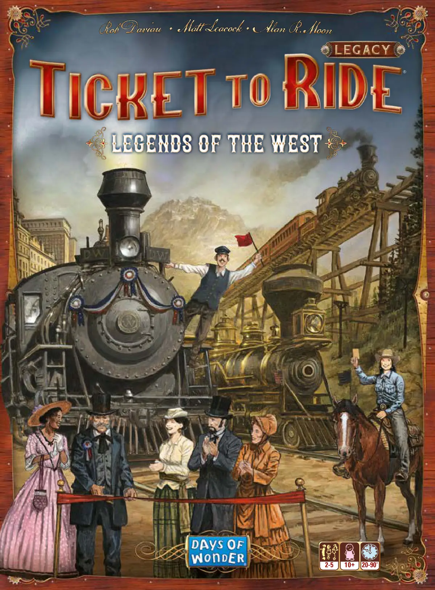
<figcaption>《车票之旅：传承·西部传奇》原版规则书 · 第 1 页（点击放大）</figcaption>
</figure>

<p>2-5</p>

<p>20-90'</p>

<p>10+</p>

<p>Rob Daviau • Matt Leacock • Alan R. Moon</p>

<p>Rob Daviau  •  Matt Leacock •  Alan R. Moon</p>

<h2>西部传奇</h2>

<h2>西部传奇</h2>

<h2>西部传奇</h2>

<figure>
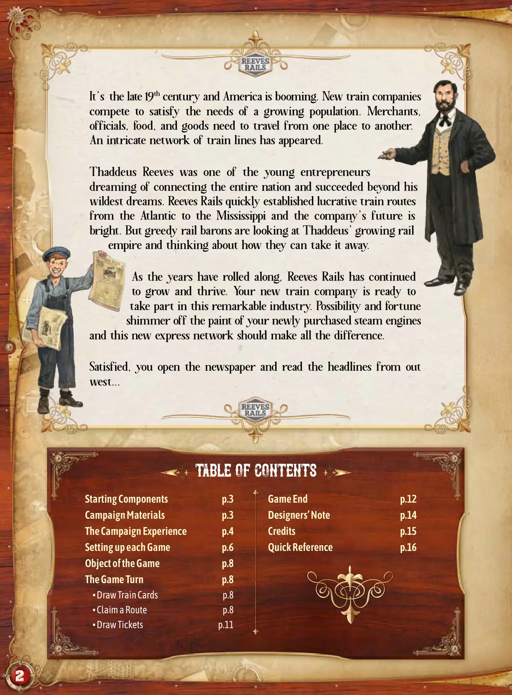
<figcaption>《车票之旅：传承·西部传奇》原版规则书 · 第 2 页（点击放大）</figcaption>
</figure>

<p>19世纪晚期，美国正在蓬勃发展。新的铁路公司相互竞争，以满足不断增长的人口需求。商人、官员、食品和货物需要从一个地方旅行到另一个地方。一个复杂的铁路网络已经出现。</p>

<p>西奥多·里夫斯是年轻的创业者之一，梦想连接整个国家，并取得了超出他最疯狂梦想的成功。里夫斯铁路公司迅速建立了从大西洋到密西西比的盈利铁路路线，公司的前景一片光明。但贪婪的铁路大亨们正盯着西奥多日益壮大的铁路帝国，思考着如何将其夺走。</p>

<p>随着岁月流逝，里夫斯铁路公司继续成长和繁荣。你的新铁路公司已准备好参与这一非凡的行业。可能性与财富在你新购买的蒸汽机车的油漆上闪闪发光，而这条新的快运网络应该能带来决定性的不同。满意地，你打开报纸，阅读来自西部的头条新闻...</p>

<p>起始组件</p>

<p>第3页</p>

<p>战役材料</p>

<p>第3页</p>

<p>战役体验</p>

<p>第4页</p>

<p>每局游戏设置</p>

<p>第6页</p>

<p>游戏目标</p>

<p>第8页</p>

<p>游戏回合</p>

<p>第8页</p>

<p>• 摸取列车卡</p>

<p>第8页</p>

<p>• 声明路线</p>

<p>第8页</p>

<p>• 摘取车票</p>

<p>第11页</p>

<p>游戏结束</p>

<p>第12页</p>

<p>设计师笔记</p>

<p>第14页</p>

<p>致谢</p>

<p>第15页</p>

<p>快速参考</p>

<p>第16页</p>

<h2>目录</h2>

<figure>
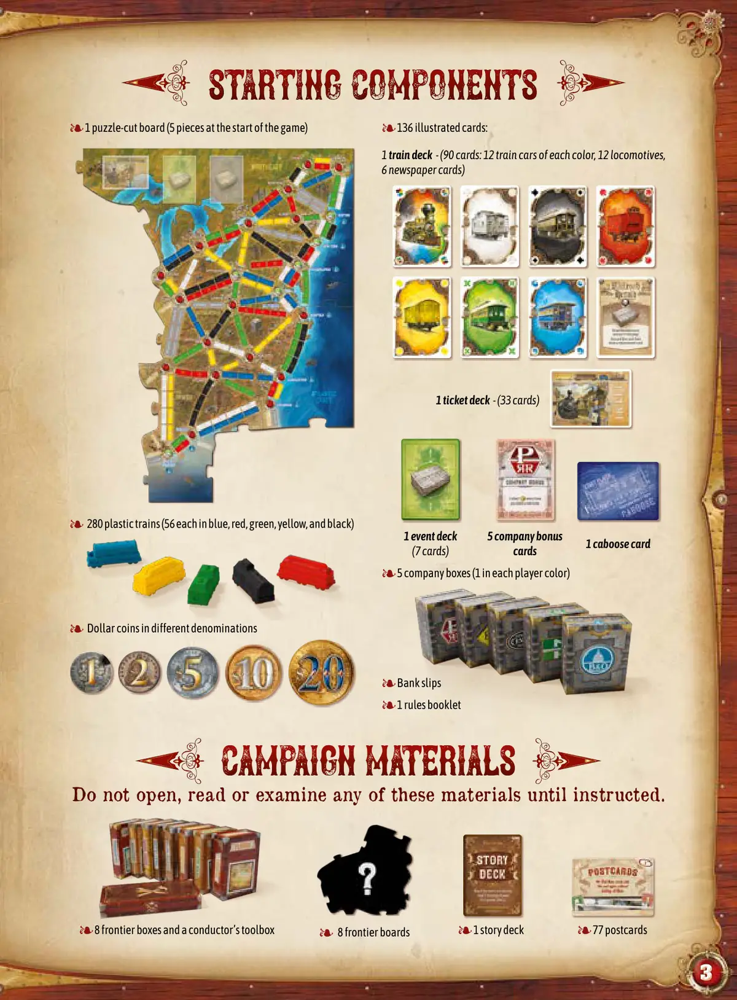
<figcaption>《车票之旅：传承·西部传奇》原版规则书 · 第 3 页（点击放大）</figcaption>
</figure>

<p>1个拼切版图（游戏开始时为5块）</p>

<p>136张插图卡牌：</p>

<p>5个公司盒（每个玩家颜色一个）</p>

<p>8个边境盒和一个列车长的工具箱</p>

<p>8个边境版图</p>

<p>不同面值的美元硬币</p>

<p>1个列车牌库 -（90张卡牌：每种颜色12节车厢，12台机车，6张报纸卡）</p>

<p>1个车票牌库 -（33张卡牌）</p>

<p>1个事件牌库</p>

<p>（7张卡牌）</p>

<p>1张守车卡</p>

<p>5张公司奖励卡</p>

<p>1个故事牌库</p>

<p>77张明信片</p>

<h2>起始组件</h2>

<h2>起始组件</h2>

<h2>战役材料</h2>

<p>在得到指示前，不要打开、阅读或检查任何这些材料。</p>

<p>280个塑料火车（蓝色、红色、绿色、黄色和黑色各56个）</p>

<p>银行单据</p>

<p>1本规则手册</p>

<figure>
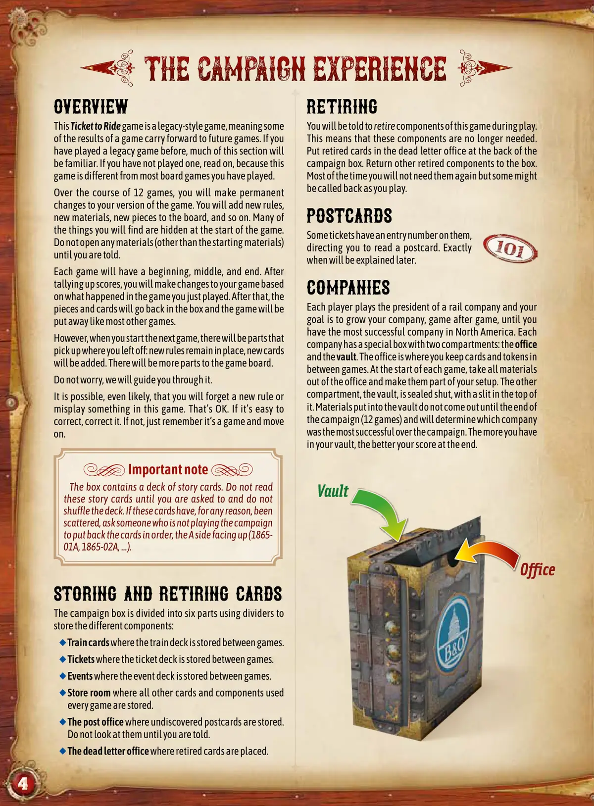
<figcaption>《车票之旅：传承·西部传奇》原版规则书 · 第 4 页（点击放大）</figcaption>
</figure>

<p>概览</p>

<p>这款《车票之旅》游戏是一款传承风格的游戏，这意味着一些游戏结果会延续到未来的游戏中。如果你之前玩过传承游戏，本节的许多内容将会很熟悉。如果你没有玩过，请继续阅读，因为这款游戏与你玩过的大多数棋盘游戏都不同。</p>

<p>在12局游戏的过程中，你将对你的游戏版本进行永久性改变。你将添加新规则、新材料、新板块到版图上，等等。许多你将发现的东西在游戏开始时是隐藏的。在被告知之前，不要打开任何材料（起始材料除外）。</p>

<p>每局游戏都会有开始、中间和结束阶段。在计分后，你将根据刚刚进行的游戏发生的事情对你的游戏进行更改。之后，棋子和卡牌将放回盒中，游戏会像大多数其他游戏一样被收起来。</p>

<p>然而，当你开始下一局游戏时，会有一些部分会接续你上次离开的地方：新规则会继续有效，新卡牌将被添加。游戏版图会有更多部分。不用担心，我们会引导你完成。</p>

<p>你可能会忘记一条新规则或在游戏中误操作，这是可能的，甚至很可能会发生。没关系。如果容易纠正，就纠正它。如果不能，就记住这只是个游戏，然后继续前进。</p>

<p>重要提示</p>

<p>盒中有一套故事卡牌。在被告知之前不要阅读这些故事卡牌，也不要洗这副牌。如果这些卡牌因任何原因被散落，请请一位没有参与战役的人按顺序将卡牌放回，A面朝上（1865-01A、1865-02A、...）。</p>

<p>存储和淘汰卡牌</p>

<p>战役盒使用分隔板分为六个部分，用于存储不同组件：</p>

<ul>
  <li>火车卡：火车牌库在游戏之间存储的地方。</li>
  <li>车票：车票牌库在游戏之间存储的地方。</li>
  <li>事件：事件牌库在游戏之间存储的地方。</li>
  <li>储藏室：所有其他每局游戏都使用的卡牌和组件存储的地方。</li>
  <li>邮局：未发现的明信片存储的地方。在被告知之前不要查看它们。</li>
  <li>死信办公室：被淘汰的卡牌放置的地方。</li>
</ul>

<p>淘汰</p>

<p>你将在游戏过程中被指示淘汰游戏的某些组件。这意味着这些组件不再需要。将淘汰的卡牌放入战役盒后部的死信办公室。将其他淘汰的组件放回盒中。大多数情况下你不再需要它们，但有些可能会在游戏过程中被召回。</p>

<p>明信片</p>

<p>一些车票上有条目编号，指示你阅读一张明信片。具体时机将在后面解释。</p>

<p>公司</p>

<p>每位玩家扮演一家铁路公司的总裁，而你的</p>

<p>目标是让你的公司不断成长，一局又一局，直到你拥有北美最成功的公司。每家公司都有一个特殊的盒子，分为两个隔间：办公室和保险库。办公室是用来在游戏之间存放卡牌和指示物的地方。在每局游戏开始时，将所有材料从办公室取出，并将它们作为你设置的一部分。另一个隔间，保险库，是密封的，顶部有一个开口。放入保险库的材料要到战役结束（12局游戏）后才会取出，并将决定哪一家公司在整个战役中最为成功。你的保险库中拥有的越多，你在游戏结束时的分数就越高。</p>

<h2>战役体验</h2>

<h2>战役体验</h2>

<p>办公室</p>

<p>保险库</p>

<figure>
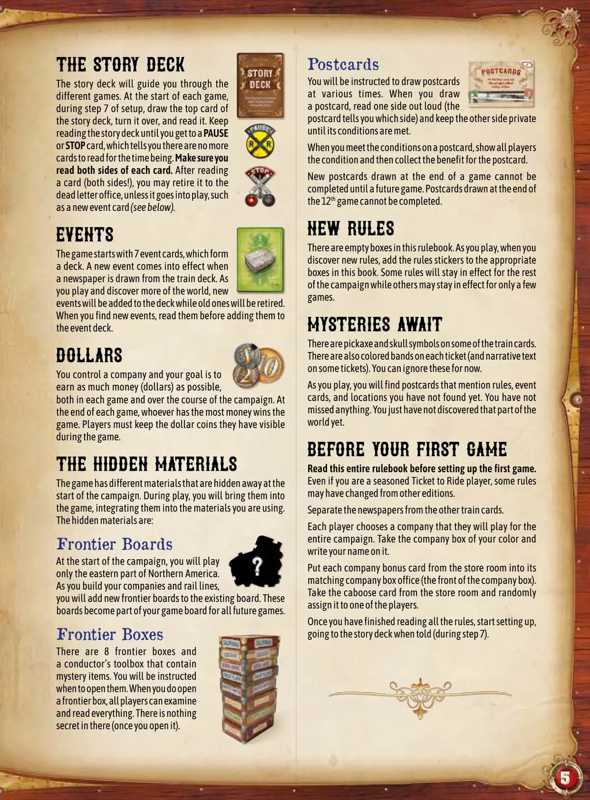
<figcaption>《车票之旅：传承·西部传奇》原版规则书 · 第 5 页（点击放大）</figcaption>
</figure>

<p>故事牌库</p>

<p>故事牌库将引导你进行不同的游戏。在每个游戏开始时，在设置的第7步期间，从故事牌库顶摸一张牌，将其翻开并阅读。继续阅读故事牌库，直到你遇到一张"暂停"或"停止"牌，这告诉你暂时没有更多牌需要阅读。确保你阅读每张牌的两面。在阅读一张牌（两面！）后，你可以将其放入死信局，除非它进入游戏，例如新的事件牌（见下文）。</p>

<p>事件</p>

<p>游戏开始时有7张事件牌，它们组成一个牌库。当从列车牌库中抽到一张报纸时，新的事件生效。随着你游玩和发现更多世界，新的事件将被添加到牌库中，而旧的事件将被淘汰。当你发现新事件时，在将其添加到事件牌库前先阅读它们。</p>

<p>美元</p>

<p>你控制一家公司，你的目标是在每个游戏以及整个战役中尽可能多地赚钱（美元）。在每个游戏结束时，谁拥有最多的钱谁就赢得游戏。玩家在游戏期间必须保持他们拥有的美元硬币可见。</p>

<p>隐藏材料</p>

<p>游戏有不同的材料，在战役开始时被隐藏。在游戏过程中，你将把它们带入游戏，将它们整合到你正在使用的材料中。隐藏材料有：</p>

<p>边疆版图</p>

<p>在战役开始时，你将只玩北美东部地区。随着你建立你的公司和铁路线，你将把新的边疆版图添加到现有版图上。这些版图将成为你所有未来游戏版图的一部分。</p>

<p>边疆盒</p>

<p>有8个边疆盒和一个列车长工具盒，里面包含神秘物品。你将被指示何时打开它们。当你打开一个边疆盒时，所有玩家都可以检查和阅读里面的所有内容。里面没有任何秘密（一旦你打开它）。</p>

<p>明信片</p>

<p>你将被指示在不同时间抽取明信片。当你抽取一张明信片时，大声朗读其中一面（明信片会告诉你哪一面），并将另一面保密，直到其条件满足。当你满足明信片上的条件时，向所有玩家展示该条件，然后收集明信片的奖励。在游戏结束时抽到的新明信片，直到未来的游戏才能完成。在第12个游戏结束时抽到的明信片无法完成。</p>

<p>新规则</p>

<p>这本规则书中有空盒子。随着你游玩，当你发现新规则时，将规则贴纸添加到本书中相应的盒子里。一些规则将在战役的其余部分保持有效，而其他规则可能只保持几局游戏的有效性。</p>

<p>神秘等待</p>

<p>一些火车卡牌上有镐头和骷髅符号。</p>

<p>每张车票上也有彩色条纹（部分车票上有叙事文本）。</p>

<p>你现在可以忽略这些。</p>

<p>随着游戏进行，你会找到提及规则、事件卡牌和你尚未发现的地点的明信片。</p>

<p>你并没有错过任何内容。</p>

<p>你只是尚未发现世界的那个部分而已。</p>

<p>在第一次游戏前</p>

<p>在设置第一次游戏前，请阅读整本规则书。</p>

<p>即使你是经验丰富的《车票之旅》玩家，某些规则可能与其他版本有所不同。</p>

<p>将报纸与其他火车卡牌分开。</p>

<p>每位玩家选择一个将在整个战役中扮演的公司。拿取你颜色的公司盒并在上面写下你的名字。</p>

<p>将储物室中的每张公司奖励卡放入对应的公司票房（公司盒的前部）。</p>

<p>从储物室中拿取车尾卡，随机分配给一位玩家。</p>

<p>当你读完所有规则后，开始设置，并在指示时（步骤7期间）前往故事牌堆。</p>

<figure>
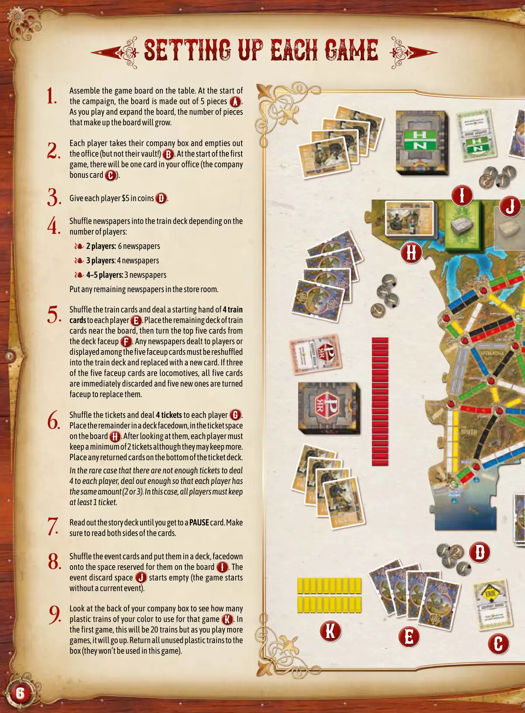
<figcaption>《车票之旅：传承·西部传奇》原版规则书 · 第 6 页（点击放大）</figcaption>
</figure>

<h2>每局游戏的设置</h2>

<h2>每局游戏的设置</h2>

<p>将游戏版图组装在桌上。在战役开始时，版图由5个板块组成。</p>

<p>随着游戏进行和版图扩展，构成版图的板块数量会增加。</p>

<p>每位玩家拿好自己的公司盒，倒出办公室里的内容（但不要倒出他们的保险库！）。</p>

<p>在第一局游戏开始时，你的办公室里会有一张牌（公司奖励牌）。</p>

<p>给每位玩家5枚硬币。</p>

<p>根据玩家数量将报纸洗入火车牌库：</p>

<p>2名玩家：6张报纸</p>

<p>3名玩家：4张报纸</p>

<p>4-5名玩家：3张报纸</p>

<p>将剩余的报纸放入储物室。</p>

<p>将火车牌洗匀，给每位玩家发4张起始手牌。将剩余的火车牌库放在版图旁，然后从牌库顶翻开5张牌面朝上。发给玩家或显示在五张面朝上牌中的任何报纸都必须重新洗入火车牌库，并替换为新牌。如果五张面朝上的牌中有三张是火车头牌，则立即将这五张牌全部弃置，并翻开五张新牌替换它们。</p>

<p>将车票洗匀，给每位玩家发4张车票。将剩余的车票背面朝下放在版图上的车票区域。查看车票后，每位玩家必须至少保留2张车票，但也可以保留更多。将退回的牌放在车票牌库的底部。</p>

<p>在极少数情况下，没有足够的车票可以给每位玩家发4张，则分发足够的车票使每位玩家拥有相同数量（2或3张）。在这种情况下，所有玩家必须至少保留1张车票。</p>

<p>朗读故事牌堆直到遇到一张暂停牌。确保阅读卡片的两面。</p>

<p>将事件牌洗匀，放入一个牌堆，背面朝下放在版图上为它们预留的位置。事件弃牌区开始时为空（游戏开始时没有当前事件）。</p>

<p>查看你的公司盒背面，了解在该局游戏中应使用多少个你颜色的塑料火车。在第一局游戏中，这将有20个火车，但随着你进行更多游戏，数量会增加。将未使用的塑料火车放回盒中（它们不会在本局游戏中使用）。</p>

<p>1.</p>

<p>6.</p>

<p>7.</p>

<p>8.</p>

<p>9.</p>

<p>2.</p>

<p>4­.</p>

<p>5­.</p>

<p>3.</p>

<figure>
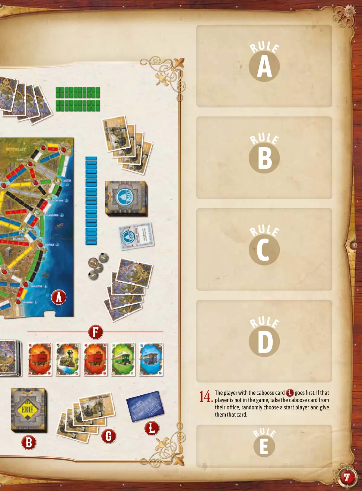
<figcaption>《车票之旅：传承·西部传奇》原版规则书 · 第 7 页（点击放大）</figcaption>
</figure>

<p>规</p>

<p>则</p>

<p>规</p>

<p>则</p>

<p>规</p>

<p>则</p>

<p>规</p>

<p>则</p>

<p>规</p>

<p>则</p>

<p>­拥有火车尾牌的玩家先手。如果该玩家不在游戏中，从他们的办公室取走火车尾牌，随机选择一个起始玩家并将该牌给他们。­</p>

<p>14.</p>

<figure>
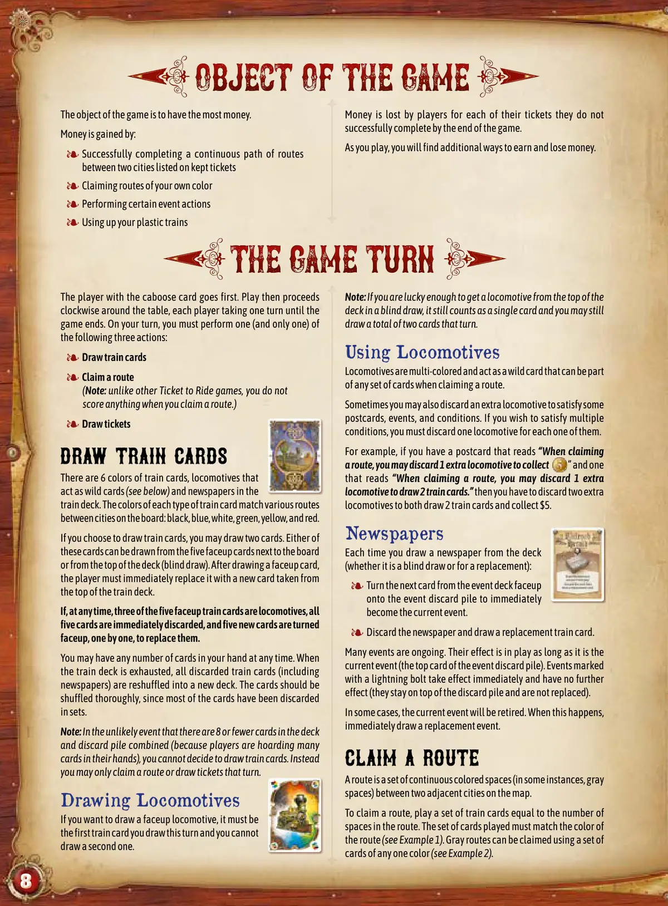
<figcaption>《车票之旅：传承·西部传奇》原版规则书 · 第 8 页（点击放大）</figcaption>
</figure>

<p>拥有火车尾卡牌的玩家先手。然后游戏按顺时针方向进行，每位玩家轮流行动，直到游戏结束。在你的回合，你必须执行以下三个行动中的一个（且仅一个）：</p>

<ul>
  <li>摸火车卡牌</li>
  <li>竞标一条路线</li>
</ul>

<p>（注意：与其他《车票之旅》游戏不同，当你竞标路线时不会获得任何分数。）</p>

<ul>
  <li>摘取车票</li>
</ul>

<p>摸火车卡牌</p>

<p>火车卡牌有6种颜色，充当万能牌的火车头（见下文）和报纸，都在火车牌库中。每种火车卡牌的颜色对应版图上城市之间的各种路线：黑色、蓝色、白色、绿色、黄色和红色。</p>

<p>如果你选择摸火车卡牌，你可以摸两张牌。这两张牌可以从版图旁边的五张明牌中抽取，也可以从牌库顶部抽取（盲抽）。摸走一张明牌后，玩家必须立即从火车牌库顶部抽取一张新牌替换它。</p>

<p>任何时候，如果五张明牌中有三张是火车头，则立即将这五张牌全部弃置，并从牌库顶部依次翻开五张新牌替换它们。</p>

<p>你任何时候都可以拥有任意数量的手牌。当火车牌库被抽空时，所有被弃置的火车卡牌（包括报纸）会被重新洗牌组成新的牌库。应该彻底洗牌，因为大多数卡牌是以成组被弃置的。</p>

<p>注意：在极不可能的情况下，如果牌库和弃牌堆中的卡牌总数为8张或更少（因为玩家在手牌中囤积了大量卡牌），你不能选择摸火车卡牌。相反，你只能在该回合竞标路线或摘取车票。</p>

<p>摸火车头</p>

<p>如果你想摸一张明面的火车头，它必须是你该回合摸的第一张火车卡牌，并且你不能摸第二张。</p>

<p>注意：如果你足够幸运，在盲抽中从牌库顶部摸到了火车头，它仍然算作一张牌，你仍然可以在该回合总共摸两张牌。</p>

<p>使用火车头</p>

<p>火车头是多彩的，充当万能牌，在竞标路线时可以作为任何一组卡牌的一部分。</p>

<p>有时你也可以额外弃置一张火车头来满足某些明信片、事件和条件。如果你想满足多个条件，你必须为每个条件弃置一张火车头。</p>

<p>例如，如果你有一张写着"在竞标路线时，你可以额外弃置1张火车头来收集$"的明信片，和另一张写着"在竞标路线时，你可以额外弃置1张火车头来摸2张火车卡牌"的明信片，那么你必须额外弃置两张火车头，才能既摸2张火车卡牌又收集$5。</p>

<p>报纸</p>

<p>每次你从牌库中摸到一张报纸（无论是盲抽还是作为替换牌）：</p>

<p>翻开事件牌库顶部的下一张牌，正面朝上放到事件弃牌堆上，立即成为当前事件。</p>

<p>弃掉报纸牌并摸一张替换的火车牌。</p>

<p>许多事件是持续的。只要它是当前事件（事件弃牌堆顶部的牌），其效果就持续有效。标记有闪电符号的事件会立即生效，且没有后续效果（它们留在弃牌堆顶部，不会被替换）。</p>

<p>在某些情况下，当前事件会被退役。当这种情况发生时，立即摸一张替换的事件。</p>

<p>宣称一条路线</p>

<p>路线是地图上两个相邻城市之间的一组连续的彩色格子（在某些情况下是灰色格子）。</p>

<p>要宣称一条路线，打出与路线格子数量相等的一组火车牌。打出的牌组必须与路线的颜色相匹配（见示例1）。灰色路线可以使用任意一种颜色的一组牌来宣称（见示例2）。</p>

<p>游戏的目标是拥有最多的金钱。</p>

<p>通过以下方式获得金钱：</p>

<p>成功完成在保留车票上列出的两个城市之间的连续路线</p>

<p>宣称你自己颜色的路线</p>

<p>执行某些事件行动</p>

<p>用完你的塑料火车</p>

<p>在游戏结束时，玩家会因为未成功完成的每张车票而失去金钱。</p>

<p>在游戏过程中，你会发现更多赚取和失去金钱的方式。</p>

<h2>游戏目标</h2>

<h2>游戏目标</h2>

<h2>游戏回合</h2>

<h2>游戏回合</h2>

<figure>
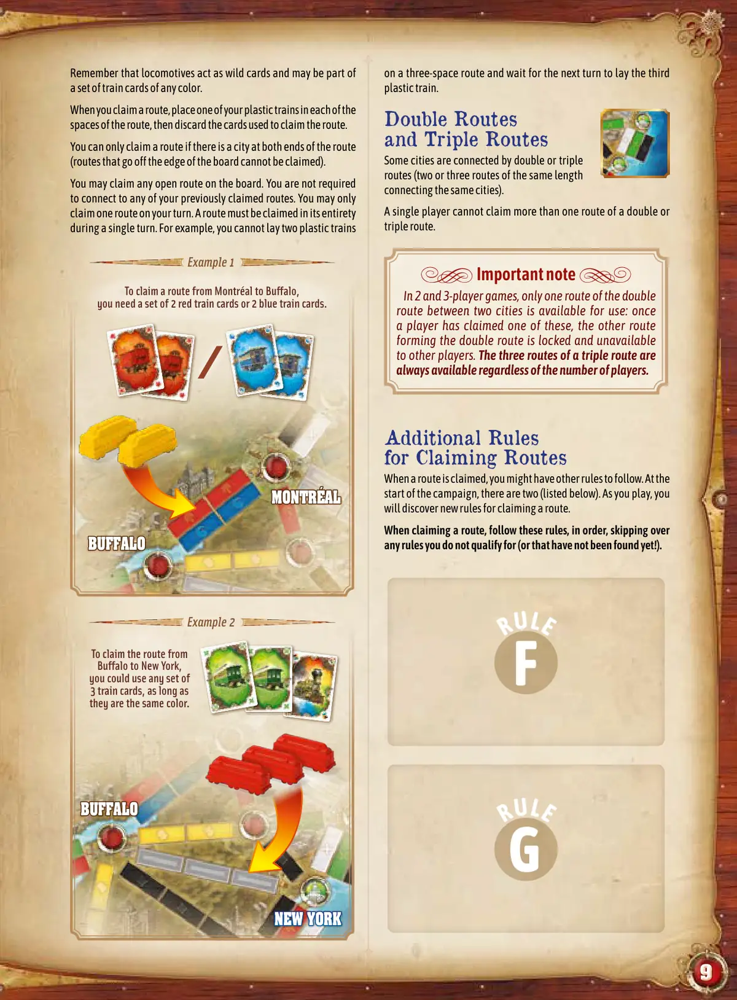
<figcaption>《车票之旅：传承·西部传奇》原版规则书 · 第 9 页（点击放大）</figcaption>
</figure>

<p>请记住，火车头可作为万能牌使用，并且可以是任意颜色的火车牌组合的一部分。</p>

<p>当你宣称一条路线时，将你的一个塑料火车放置在路线的每个格中，然后弃掉用于宣称该路线的牌。</p>

<p>只有当路线两端都有城市时，你才能宣称该路线（从版图边缘延伸出的路线不能被宣称）。</p>

<p>你可以宣称版图上任何开放的路线。你不需要连接到你之前宣称的任何路线。在你的回合中，你只能宣称一条路线。路线必须在单个回合内完整宣称。例如，你不能在一个三格长的路线上放置两个塑料火车，然后等到下一回合再放置第三个塑料火车。</p>

<p>双倍路线</p>

<p>和三倍路线</p>

<p>一些城市之间通过双倍或三倍路线连接（两条或三条相同长度的路线连接相同的城市）。</p>

<p>单个玩家不能宣称双倍或三倍路线中的多条路线。</p>

<p>重要提示</p>

<p>在2人和3人游戏中，只有两个城市之间的双倍路线中的一条可供使用：一旦有玩家宣称了其中一条，构成双倍路线的另一条路线将被锁定，其他玩家无法使用。三倍路线的三条路线无论玩家数量多少，总是可供使用。</p>

<p>宣称路线的</p>

<p>附加规则</p>

<p>当一条路线被宣称时，你可能需要遵循其他规则。在战役开始时，有两条规则（如下所列）。随着游戏的进行，你将发现宣称路线的新规则。</p>

<p>宣称路线时，按顺序遵循以下规则，跳过你不符合的条件（或尚未发现的规则！）。</p>

<p>要从蒙特利尔到布法罗宣称一条路线，你需要一套2张红色火车牌或2张蓝色火车牌。</p>

<p>示例 1</p>

<h2>布法罗</h2>

<h2>布法罗</h2>

<h2>蒙特利尔</h2>

<h2>蒙特利尔</h2>

<p>要从布法罗到纽约宣称路线，</p>

<p>你可以使用任意一套3张火车牌，</p>

<p>只要它们颜色相同即可。</p>

<p>示例 2</p>

<h2>布法罗</h2>

<h2>布法罗</h2>

<h2>纽约</h2>

<h2>纽约</h2>

<p>规</p>

<p>则</p>

<p>规</p>

<p>则</p>

<figure>
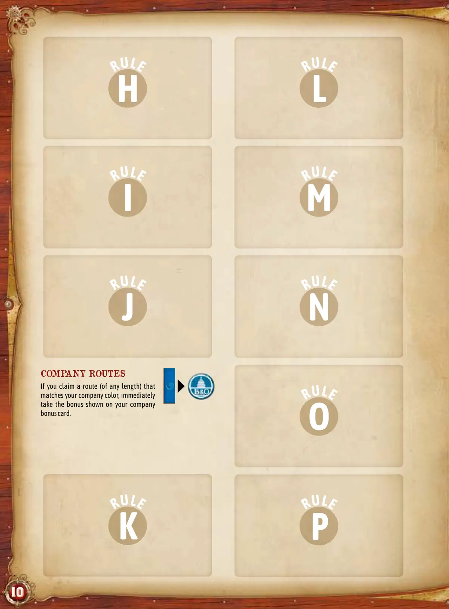
<figcaption>《车票之旅：传承·西部传奇》原版规则书 · 第 10 页（点击放大）</figcaption>
</figure>

<h2>公司路线</h2>

<p>如果你宣称一条（任意长度的）与你的公司颜色匹配的路线，立即从你的公司奖励卡上获取所示的奖励。</p>

<p>规</p>

<p>则</p>

<p>规</p>

<p>则</p>

<p>规</p>

<p>则</p>

<p>规</p>

<p>则</p>

<p>规</p>

<p>则</p>

<p>规</p>

<p>则</p>

<p>规</p>

<p>则</p>

<p>规</p>

<p>则</p>

<p>规</p>

<p>则</p>

<figure>
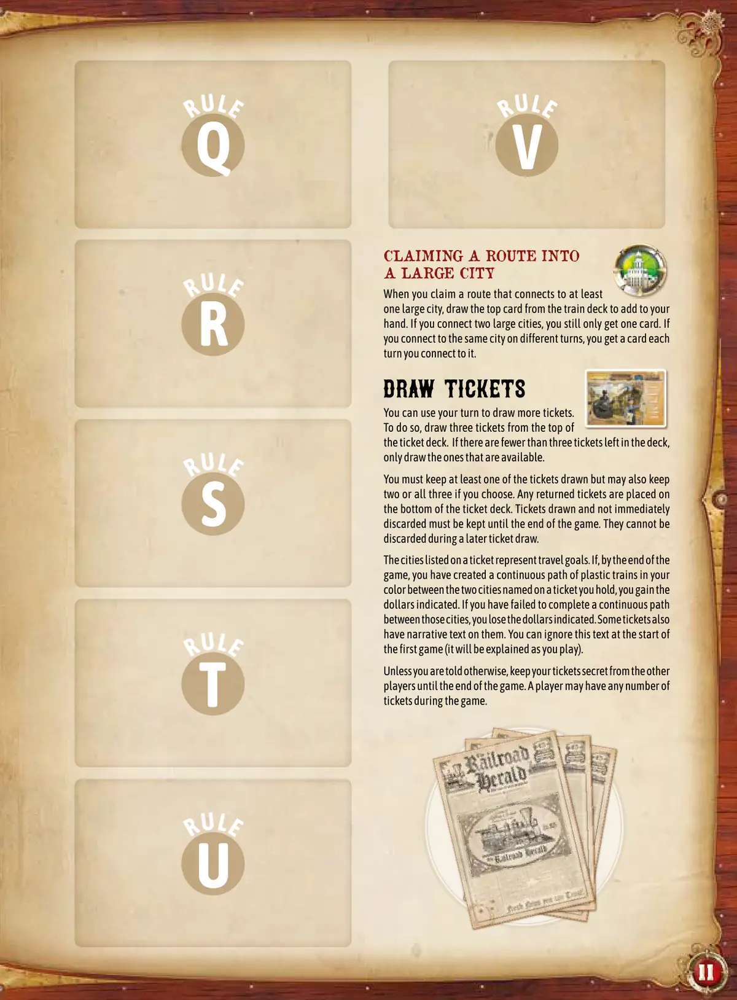
<figcaption>《车票之旅：传承·西部传奇》原版规则书 · 第 11 页（点击放大）</figcaption>
</figure>

<h2>声明通往</h2>

<h2>大城市的路线</h2>

<p>当你声明一条连接至少一个大城市的路线时，从火车牌库顶摸一张牌加入你的手牌。如果你连接了两个大城市，你仍然只能获得一张牌。如果你在不同的回合连接到同一个城市，每次连接到它时你都会获得一张牌。</p>

<p>抽票</p>

<p>你可以使用你的回合来抽取更多车票。</p>

<p>为此，从车票牌库顶抽取三张车票。如果牌库中剩余的车票少于三张，则只抽取可用的那些。</p>

<p>你必须保留至少一张抽到的车票，但如果愿意，你也可以保留两张或全部三张。任何被退回的车票会被放置到车票牌库的底部。抽到且没有立即弃掉的车票必须保留到游戏结束。它们不能在后续的车票抽取中被弃掉。</p>

<p>车票上列出的城市代表旅行目标。如果在游戏结束时，你在你持有的车票上所命名的两个城市之间，用你颜色的塑料火车创建了一条连续路径，你将获得所示的美元数。如果你未能在这两个城市之间创建一条连续路径，你将失去所示的美元数。一些车票上还有叙述性文本。在第一局游戏开始时，你可以忽略这些文本（随着游戏进行会进行解释）。</p>

<p>除非另有说明，否则将你的车票对其他玩家保密直到游戏结束。在游戏过程中，玩家可以拥有任意数量的车票。</p>

<figure>
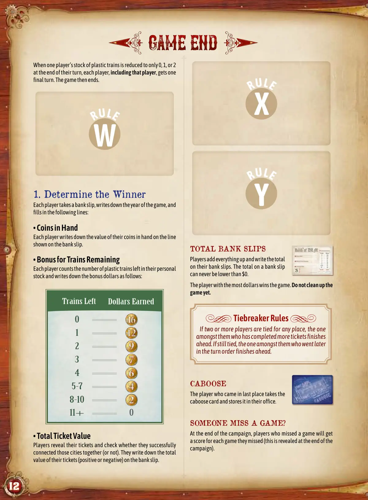
<figcaption>《车票之旅：传承·西部传奇》原版规则书 · 第 12 页（点击放大）</figcaption>
</figure>

<p>当一个玩家的塑料火车库存在其回合结束时减少到只剩下0、1或2辆时，包括该玩家在内的每位玩家都会获得一个最终回合。然后游戏结束。</p>

<h3>1. 确定获胜者</h3>

<p>每位玩家取一张银行单，写下游戏年份，并填写以下内容：</p>

<p>• 手中的硬币</p>

<p>每位玩家在银行单所示行上写下他们手中硬币的价值。</p>

<p>• 剩余火车奖励</p>

<p>每位玩家计算其个人库存中剩余的塑料火车数量，并按以下方式写下奖励美元：</p>

<p>5-7</p>

<p>8-10</p>

<p>11+</p>

<p>赚取的美元­</p>

<p>剩余火车数</p>

<p>• 车票总价值</p>

<p>玩家展示他们的车票并检查是否成功连接了那些城市（或未连接）。他们在银行单上写下车票的总价值（正数或负数）。</p>

<h2>银行单总计</h2>

<p>玩家将所有项目相加并在银行单上写下总数。银行单上的总数永远不会低于$0。</p>

<p>美元最多的玩家赢得游戏。暂时不要收拾游戏。</p>

<p>平局规则</p>

<p>如果有两位或更多玩家在任何名次上平局，其中完成了更多车票的玩家排名领先。如果仍然平局，其中在回合顺序中较晚行动的玩家排名领先。</p>

<h2>尾车卡</h2>

<p>最后一名的玩家获得尾车卡并将其存放在其办公室中。</p>

<p>­有人缺席游戏？</p>

<p>在活动结束时，缺席游戏的玩家将为他们缺席的每场游戏获得一个分数（这会在活动结束时公布）。</p>

<h2>游戏结束</h2>

<h2>游戏结束</h2>

<p>规</p>

<p>则</p>

<p>规</p>

<p>则</p>

<p>规</p>

<p>则</p>

<figure>
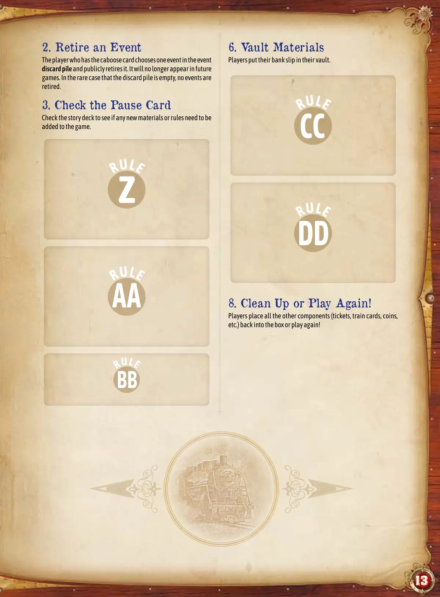
<figcaption>《车票之旅：传承·西部传奇》原版规则书 · 第 13 页（点击放大）</figcaption>
</figure>

<h3>2. 退役一个事件</h3>

<p>拥有尾车卡的玩家选择事件弃牌堆中的一个事件并公开退役它。它将不再出现在未来的游戏中。在弃牌堆为空的罕见情况下，不退役任何事件。</p>

<h3>3. 检查暂停卡</h3>

<p>检查故事牌组，看是否需要将任何新材料或规则添加到游戏中。</p>

<h3>6. 收藏材料</h3>

<p>玩家将他们的银行单放入保险库中。</p>

<ol>
  <li>收拾起来或再玩一次！</li>
</ol>

<p>玩家将所有其他组件（车票、火车卡、硬币等）放回盒中或再次游戏！</p>

<p>规</p>

<p>则</p>

<p>规</p>

<p>则</p>

<p>规</p>

<p>则</p>

<p>规</p>

<p>则</p>

<p>规</p>

<p>则</p>

<figure>
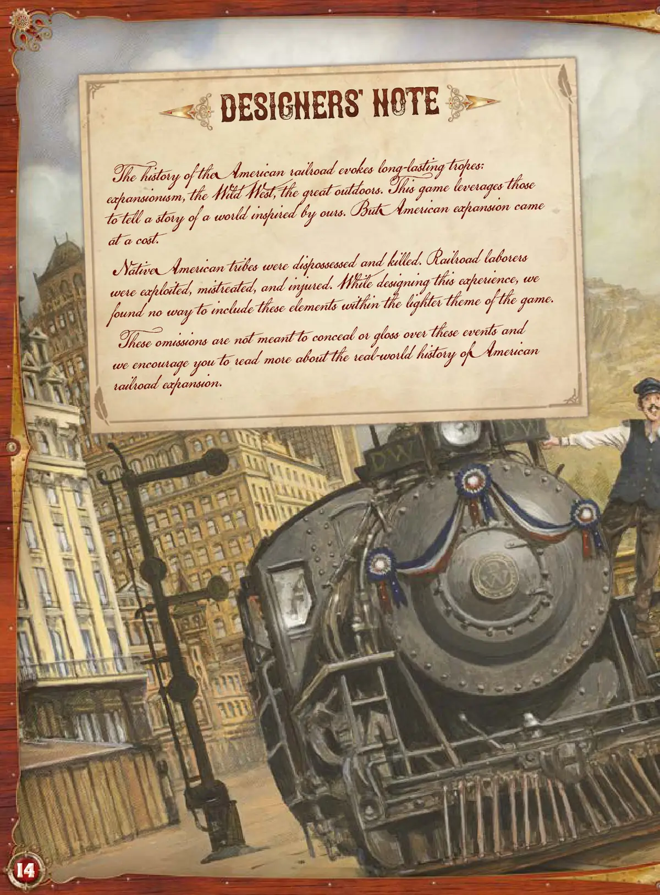
<figcaption>《车票之旅：传承·西部传奇》原版规则书 · 第 14 页（点击放大）</figcaption>
</figure>

<p>美国铁路的历史唤起了持久的陈词滥调：</p>

<p>扩张主义、狂野西部、广阔户外。这款游戏利用这些元素</p>

<p>讲述一个受我们世界启发的世界故事。但美国的扩张</p>

<p>是有代价的。</p>

<p>美国原住民部落被剥夺土地并被杀害。铁路劳工</p>

<p>被剥削、虐待和受伤。在设计这个体验时，我们发现</p>

<p>无法将这些元素融入游戏较轻松的主题中。</p>

<p>这些省略并非意在掩盖或淡化这些事件，我们鼓励您</p>

<p>阅读更多关于美国铁路扩张的真实世界历史。</p>

<h2>设计师笔记</h2>

<h2>设计师笔记</h2>

<figure>
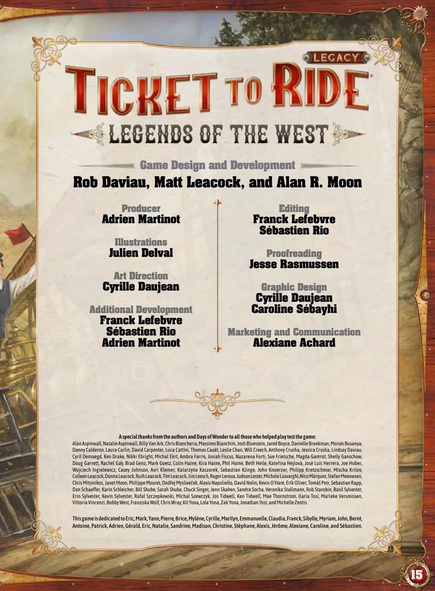
<figcaption>《车票之旅：传承·西部传奇》原版规则书 · 第 15 页（点击放大）</figcaption>
</figure>

<h2>西部传奇</h2>

<h2>西部传奇</h2>

<h2>西部传奇</h2>

<p>游戏设计与开发</p>

<p>Rob Daviau、Matt Leacock 和 Alan R. Moon</p>

<p>作者和 Days of Wonder 特别感谢所有帮助测试游戏的人员：</p>

<p>Alan Aspinwall、Natalie Aspinwall、Billy Van Ark、Chris Biancheria、Massimo Bianchini、Josh Bluestein、Jared Boyce、Danielle Broekman、Moisés Busanya、</p>

<p>Danny Calderon、Laura Carlin、David Carpenter、Luca Cattini、Thomas Cauët、Leslie Chan、Will Creech、Anthony Crusha、Jessica Crusha、Lindsay Daviau、</p>

<p>Cyril Demaegd、Ken Drake、Nikki Ebright、Michal Ekrt、Ambra Farris、Josiah Fiscus、Nazarena Forti、Sue Frietsche、Magda Gamrot、Shelly Ganschow、</p>

<p>Doug Garrett、Rachel Gay、Brad Genz、Mark Goetz、Colin Haine、Kira Haine、Phil Haine、Beth Heile、Kateřina Hejlová、José Luis Herrera、Joe Huber、</p>

<p>Wojciech Ingielewicz、Casey Johnson、Avri Klemer、Katarzyna Kaszorek、Sebastian Klinge、John Knoerzer、Philipp Kretzschmar、Mischa Krilov、</p>

<p>Colleen Leacock、Donna Leacock、Ruth Leacock、Tim Leacock、Jim Leesch、Roger Leroux、Judson Lester、Michele Lusvarghi、Nico Márquez、Stefan Meeuwsen、</p>

<p>Chris Mitsinikos、Janet Moon、Philippe Mouret、Ondřej Mysliveček、Alexis Napoliello、David Nolin、Kevin O'Hare、Erik Oliver、Tomáš Petr、Sebastian Rapp、</p>

<p>Dan Schaeffer、Karin Schleicher、Bill Shube、Sarah Shube、Chuck Singer、Jenn Skahen、Sandra Socha、Veronika Stallmann、Rob Starobin、Basil Sylvester、</p>

<p>Erin Sylvester、Kevin Sylvester、Rafał Szczepkowski、Michał Szewczyk、Jos Tidwell、Ken Tidwell、Mae Thornstrom、Ilaria Tosi、Marieke Versmissen、</p>

<p>Vittoria Vincenzi、Bobby West、Franziska Wolf、Chris Wray、Kit Yona、Lola Yona、Zak Yona、Jonathan Yost 和 Michelle Zentis。</p>

<p>本游戏献给 Eric、Mark、Yann、Pierre、Brice、Mylène、Cyrille、Marilyn、Emmanuelle、Claudia、Franck、Sibylle、Myriam、John、Bernt、</p>

<p>Antoine、Patrick、Adrien、Gérald、Eric、Natalie、Sandrine、Madison、Christine、Stéphane、Alexis、Jérôme、Alexiane、Caroline 和 Sébastien。</p>

<p>制作人</p>

<p>Adrien Martinot</p>

<p>插画</p>

<p>Julien Delval</p>

<p>艺术指导</p>

<p>Cyrille Daujean</p>

<p>额外开发</p>

<p>Franck Lefebvre</p>

<p>Sébastien Rio</p>

<p>Adrien Martinot</p>

<p>编辑</p>

<p>Franck Lefebvre</p>

<p>Sébastien Rio</p>

<p>校对</p>

<p>Jesse Rasmussen</p>

<p>平面设计</p>

<p>Cyrille Daujean</p>

<p>Caroline Sébayhi</p>

<p>市场营销与传播</p>

<p>Alexiane Achard</p>

<figure>
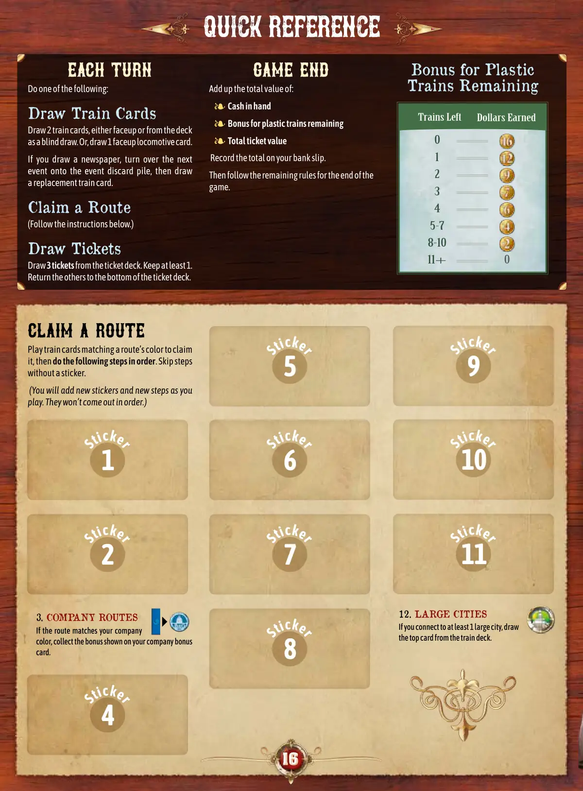
<figcaption>《车票之旅：传承·西部传奇》原版规则书 · 第 16 页（点击放大）</figcaption>
</figure>

<p>宣称路线</p>

<p>出与路线颜色相符的火车卡来宣称该路线，然后按顺序执行以下步骤。没有贴纸的步骤请跳过。</p>

<p>（随着游戏进行，你将添加新的贴纸和新的步骤。它们不会按顺序出现。）</p>

<h2>3. 公司路线</h2>

<p>如果路线与你的公司颜色相符，收集你公司奖励卡上显示的奖励。</p>

<h2>12. 大城市</h2>

<p>如果你连接到至少1个大城市，从火车牌库顶摸一张牌。</p>

<p>每回合</p>

<p>执行以下一项行动：</p>

<p>摸火车牌</p>

<p>摸2张火车牌，可以是明牌或从牌库盲摸。或者，摸1张明面的火车头牌。</p>

<p>如果你摸到报纸，将下一张事件牌翻开放到事件弃牌堆上，然后摸一张替换的火车牌。</p>

<p>宣称路线</p>

<p>（遵循以下说明。）</p>

<p>摸车票</p>

<p>从车票牌库摸3张车票。至少保留1张。将其他牌放回车票牌库底部。</p>

<p>游戏结束</p>

<p>计算以下项目的总价值：</p>

<p>手中的现金</p>

<p>剩余塑料火车的奖励</p>

<p>车票总价值</p>

<p>将总数记录在你的银行单上。然后遵循游戏结束的剩余规则。</p>

<p>剩余塑料火车奖励</p>

<p>5-7</p>

<p>8-10</p>

<p>11+</p>

<p>赚取的美元­</p>

<p>剩余火车数</p>

<h2>快速参考</h2>

<p>贴纸</p>

<p>贴纸</p>

<p>贴纸</p>

<p>贴纸</p>

<p>贴纸</p>

<p>贴纸</p>

<p>贴纸</p>

<p>贴纸</p>

<p>贴纸</p>

<p>贴纸</p>
        </div>

        <footer class="source-note">
<p>来源：<a href="https://cdn.svc.asmodee.net/staging-daysofwonder/uploads/2024/07/720036-T2RL-Rules-210x285-EN-compressed.pdf" target="_blank" rel="noopener">Days of Wonder 官方</a>（2023 720036-T2RL-Rules-210x285-EN-compressed.pdf）· 译文仅供个人学习查阅，规则内容归 Days of Wonder / Asmodee 及版权方所有 · 原文版權與商标归原出版方。</p>
</footer>
      </article>
    </main>
  </div>

  <button class="to-top" aria-label="返回顶部" data-i18n-aria="backTop">↑</button>
  <script src="../assets/js/i18n.js"></script>
  <script src="../assets/js/main.js"></script>
</body>
</html>
